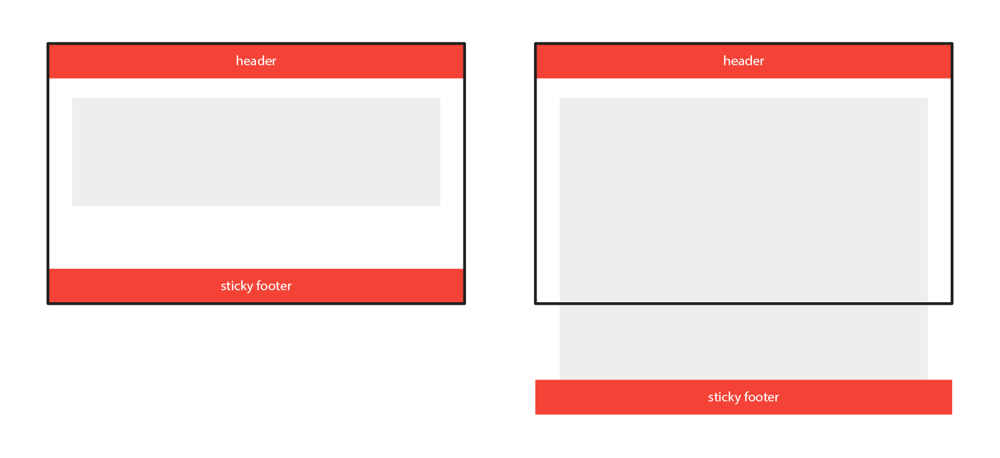

CSS Sticky Footer with Flexbox and Grid
In this quick tutorial, we'll build a sticky footer layout two ways — using CSS Flexbox and Grid.
A long standing layout challenge for front end folks has been the “sticky footer” layout. A sticky footer is one that sticks to the bottom of the page if there's not enough content to fill up a minimum of 100% the screen height, but also one that gets pushed further down the viewport like normal if there is enough content.

Nowadays, it's pretty simple to achieve this layout! We're going to explore two ways:
But first, let's look at some common HTML and CSS for our layout.
The Common HTML and CSS
I'm going to structure my layout pretty simply, with a header, main, and footer, and I'll wrap all of those in a .wrapper element:
<div class="wrapper">
<header></header>
<main></main>
<footer></footer>
</div>
This gives me a pretty contained structure to work with, and some easy targets for my layout. As far as the styling goes, we'll want to make sure that our .wrapper element is at least the height of the viewport at all times:
.wrapper {
min-height: 100vh;
}
Note: I use normalize.css in pretty much all of my projects, which does quite a bit of “normalization” of CSS across browsers. If you're not keen on using a library, then the one important thing of note is the margin reset on the body tag:
body {
margin: 0;
}
Right! Let's jump into the specifics.
The Flexbox Way
With Flexbox, my thought process is that I first need a column based flex-direction. With that, I can then set my header and footer to occupy as much space as their contents require, while the main should always fill up a minimum of all of the available space left. Here's what the CSS looks like:
.wrapper {
display: flex;
flex-direction: column;
}
header,
footer {
flex: 0 1 auto;
}
main {
flex: 1;
}
Voila! Simple. Here's a little CodePen demo that allows you to dynamically add content to see the changes.
The Grid Way
With CSS grid, things become even easier! Grid is such a powerful spec and is perfect for controlling these overarching layout setups like this. All we need to do in this case is target the .wrapper element and define our grid layout there. We'll want three rows, and like before, we'll want the main row to occupy a minimum of the remaining viewport height after the header and footer take up as much space as they need. Here's the (dead simple) CSS:
.wrapper {
display: grid;
grid-template-rows: auto 1fr auto;
}
And that's it! Here's the CSS demo for the Grid version:
Browser Support
Support for both of these APIs is really great, with Flexbox edging out Grid by just a bit due to it being around longer. If you're worried about supporting old browsers, then maybe Flexbox is for you. With this particular layout though, I'd choose CSS Grid anyway. The fallback would be extremely graceful on browsers that don't support it, as they'd just render the three blocks stacked one on top the other with no sticky footer.
Wrap Up
That's just about it! We've taken a look at two powerful CSS APIs and really simplified a once non-trivial layout implementation with just a few lines of CSS. Thanks again for reading, and if you have and questions, comments, or feedback, feel free to send me a tweet.